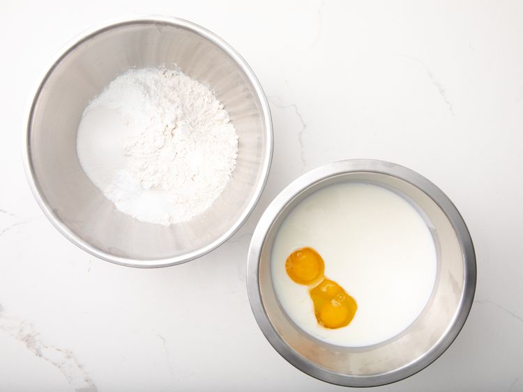
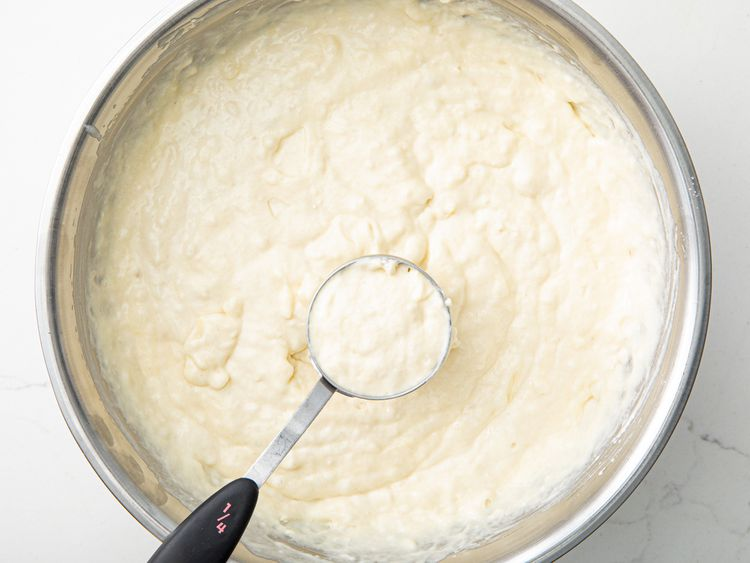
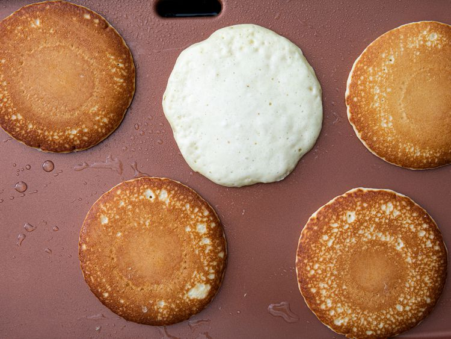

Click
here
to go back to Home
Buttermilk Pancake

Prep: 15 mins Cook: 10 mins Total: 25 mins
Ingredients
- 3 cups all-purpose flour
- 3 Tbsp white sugar
- 3 tsp baking powder
- 1.5 tsp baking soda
- 3/4 tsp salt
- 3 cups buttermilk
- 1/2 cup milk
- 3 large eggs
- 1.3 cup butter, melted
Instructions
- Combine flour, sugar, baking powder, baking soda, and salt in a large bowl. Beat buttermilk, milk, eggs, and melted butter together in a separate bowl. Keep the two mixtures separate until you are ready to cook.

- Heat a lightly oiled griddle or frying pan over medium-high heat. You can flick water across the surface and if it beads up and sizzles, it's ready.
- Pour the wet mixture into the dry mixture; use a wooden spoon or fork to mix until it's just blended together. The batter will be a little lumpy which is what you want.

- Pour or scoop batter onto the preheated griddle, using approximately 1/2 cup for each pancake. Cook until bubbles appear on the surface, 1 to 2 minutes; flip with a spatula and cook until browned on the other side. Repeat with remaining batter.

- Serve hot and enjoy!
Credits: https://www.justonecookbook.com/homemade-chashu-miso-ramen/